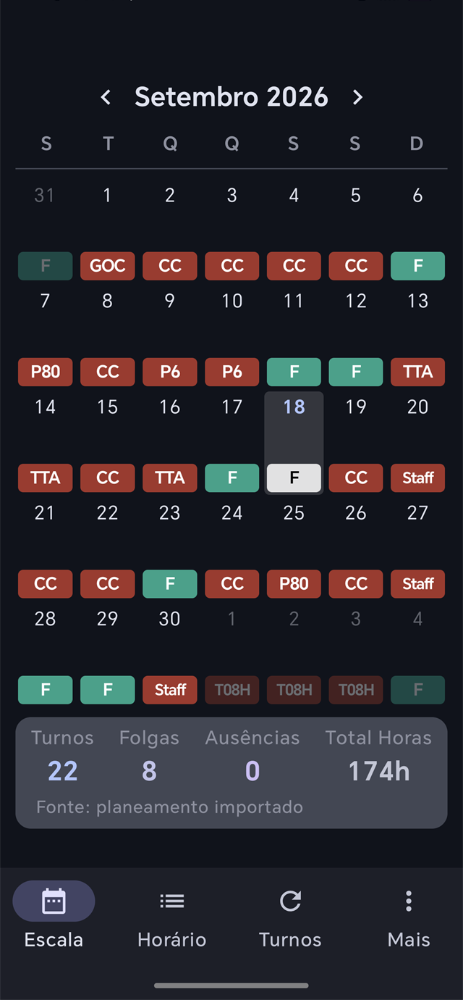
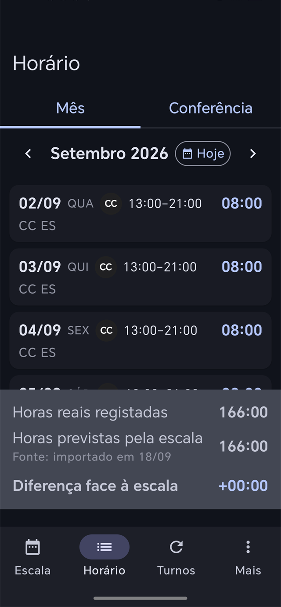
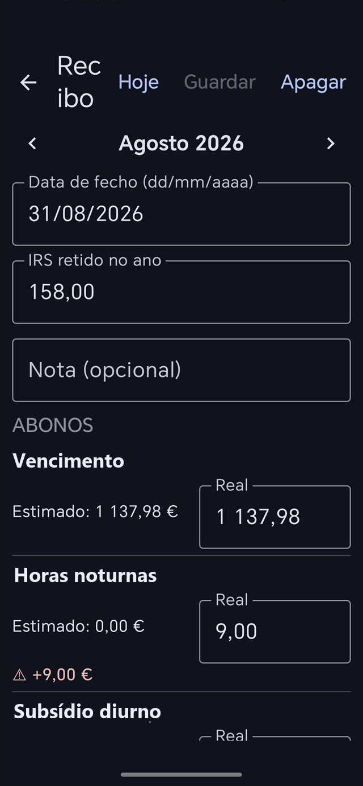
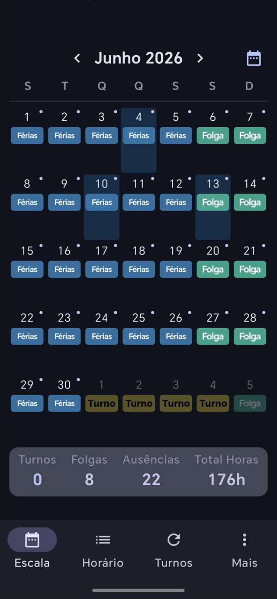

Escala projetada
Projeta a rotação a partir da âncora do ciclo, cruza-a com o planeamento mensal importado do PDF da empresa e mostra feriados nacionais e municipais.
Versão Beta · Teste interno
Gestão inteligente de escalas, turnos e cálculo salarial para profissionais de segurança aeroportuária.
O Predit projeta a sua rotação a partir do ciclo de serviço, importa o planeamento mensal da empresa em PDF, regista as horas reais de cada dia e confere o recibo de vencimento contra os cálculos da app. Tudo no seu telemóvel, sem contas e sem servidores.
Android 8.0 ou superior · Grátis · Sem publicidade e sem recolha de dados pessoais.

22 turnos · 8 folgas174 h previstas no mês
Não é um calendário genérico: o Predit fala a linguagem da segurança privada aeroportuária — postos, rotações, CCT e recibos.
Projeta a rotação a partir da âncora do ciclo, cruza-a com o planeamento mensal importado do PDF da empresa e mostra feriados nacionais e municipais.
Registe as horas reais de cada dia e compare-as com o que a escala previa: total do mês, diferença e ciclo semestral de jornada.
Nome, abreviatura, cor e horário por tipo de turno, com 24 cores disponíveis, rotações de 17 dias e o posto guardado em cada dia.
Motor CCT com valor/hora e multiplicadores, IRS regional (Continente, Açores e Madeira) e sinalização automática das divergências face ao recibo real.
Férias, baixa médica e feriados registados por período e contabilizados ao dia, sem sair do calendário da escala.
Todos os dados ficam no telemóvel, numa base de dados local. Backups manuais e auto-backup no arranque, sem qualquer pedido a servidores.
Cada tipo de dia tem uma cor própria, e é essa cor que aparece no calendário, no horário e na conferência do recibo. Estas são as quatro categorias base:
Ecrãs reais da versão em teste — escala, registo de horas e conferência do recibo, tudo em modo escuro.



A versão Beta está a ser distribuída por duas vias: pelo teste interno do Google Play — é preciso estar na lista de testadores — e por APK assinado nos releases do GitHub.
O APK do GitHub pede que autorize «Instalar de fontes desconhecidas». O teste interno no Play exige que a conta Google já tenha sido adicionada à lista de testadores.